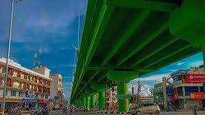
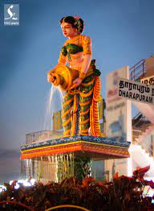
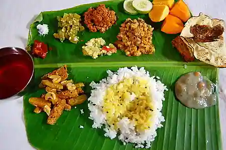
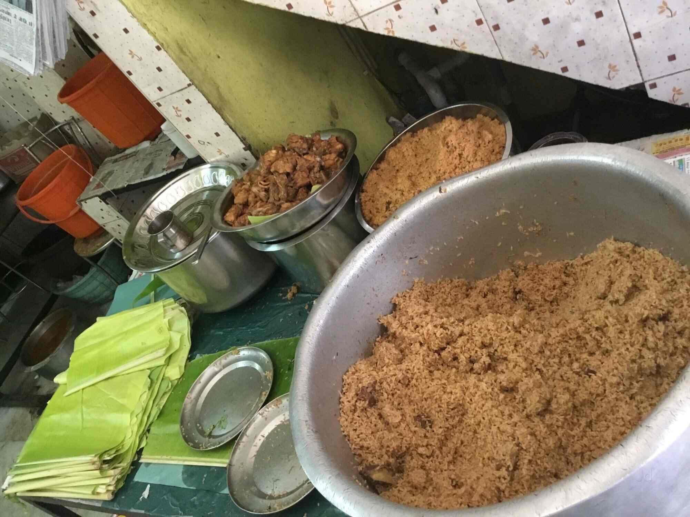
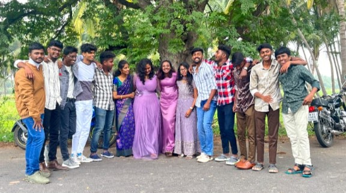

Dharapuram is a town situated along the banks of Amaravati River in Tiruppur district in the Indian state of
Tamil Nadu. Dharapuram is one of the oldest towns in South India and was the capital of Kongu Nadu under the
Cheras, Western Ganga Dynasty and later Kongu Cholas, at which time it was known as Viradapuram.

Top Attractions
Explore the must-visit attractions in dharapuram:
Amaravathi Statue:Amaravathi statue is a one of the top most attraction thing in DPM.
that
statue is litteraly have a strong fan base and that is a one of the historical statue ever maid
Historic District: Immerse yourself in the city's history with a stroll through our
charming historic district.
Art Gallery: Admire local and international artwork at our renowned art gallery.

Local Cuisine
This city is only not famous for a good cusine. its matter of how we provide a food to you. its full of
a
hygine and good hearted and with a lot of kindness. thats the reasobn for why we famous for a cusine
This DPM is always famous for a beef biriyani and espacially famouys for a "beef biriyani" and its a
good food also


The Vibrant Community
Dharapuram is not just a city; it's a community. Residents here take pride in their city, contributing to a
vibrant and inclusive atmosphere. From local events to community projects, there's always something
happening in Dharapuram.

Future Developments
The widening of the Palladam-Dharapuram Road from two-lane to four-lane to a length of six-km is expected to
be completed by February, 2024.About 25 percent of the work, which is being carried out at a cost of ₹58
crore, has been completed. “The work is progressing at a brisk pace,” a senior official said.